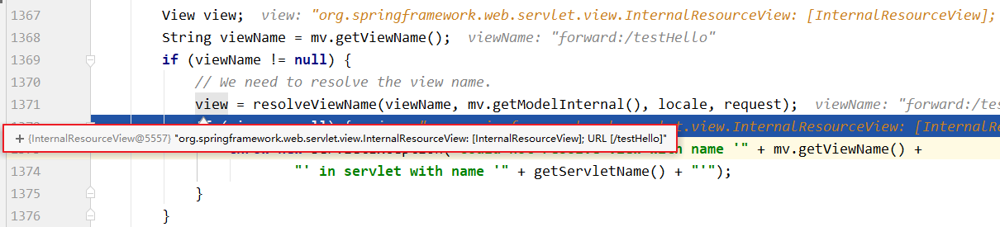

三、SpringMVC
1、SpringMVC简介
1.1、什么是MVC
MVC是一种软件架构的思想，将软件按照模型、视图、控制器来划分
M：Model，模型层，指工程中的JavaBean，作用是处理数据
JavaBean分为两类：
- 一类称为实体类Bean：专门存储业务数据的，如 Student、User 等
- 一类称为业务处理 Bean：指 Service 或 Dao 对象，专门用于处理业务逻辑和数据访问。
V：View，视图层，指工程中的html或jsp等页面，作用是与用户进行交互，展示数据
C：Controller，控制层，指工程中的servlet，作用是接收请求和响应浏览器
MVC的工作流程： 用户通过视图层发送请求到服务器，在服务器中请求被Controller接收，Controller调用相应的Model层处理请求，处理完毕将结果返回到Controller，Controller再根据请求处理的结果找到相应的View视图，渲染数据后最终响应给浏览器
1.2、什么是SpringMVC
SpringMVC是Spring的一个后续产品，是Spring的一个子项目
SpringMVC 是 Spring 为表述层开发提供的一整套完备的解决方案。在表述层框架历经 Strust、WebWork、Strust2 等诸多产品的历代更迭之后，目前业界普遍选择了 SpringMVC 作为 Java EE 项目表述层开发的首选方案。
注：三层架构分为表述层（或表示层）、业务逻辑层、数据访问层，表述层表示前台页面和后台 servlet
1.3、SpringMVC的特点
Spring 家族原生产品，与 IOC 容器等基础设施无缝对接
基于原生的Servlet，通过了功能强大的前端控制器DispatcherServlet，对请求和响应进行统一处理
表述层各细分领域需要解决的问题全方位覆盖，提供全面解决方案
代码清新简洁，大幅度提升开发效率
内部组件化程度高，可插拔式组件即插即用，想要什么功能配置相应组件即可
性能卓著，尤其适合现代大型、超大型互联网项目要求
2、入门案例
2.1、开发环境
IDE：idea 2019.2
构建工具：maven3.5.4
服务器：tomcat8.5
Spring版本：5.3.1
2.2、创建maven工程
①添加web模块
②打包方式：war
③引入依赖
<dependencies>
<!-- SpringMVC -->
<dependency>
<groupId>org.springframework</groupId>
<artifactId>spring-webmvc</artifactId>
<version>5.3.1</version>
</dependency>
<!-- 日志 -->
<dependency>
<groupId>ch.qos.logback</groupId>
<artifactId>logback-classic</artifactId>
<version>1.2.3</version>
</dependency>
<!-- ServletAPI -->
<dependency>
<groupId>javax.servlet</groupId>
<artifactId>javax.servlet-api</artifactId>
<version>3.1.0</version>
<scope>provided</scope>
</dependency>
<!-- Spring5和Thymeleaf整合包 -->
<dependency>
<groupId>org.thymeleaf</groupId>
<artifactId>thymeleaf-spring5</artifactId>
<version>3.0.12.RELEASE</version>
</dependency>
</dependencies>注：由于 Maven 的传递性，我们不必将所有需要的包全部配置依赖，而是配置最顶端的依赖，其他靠
传递性导入。
2.3、配置web.xml
注册SpringMVC的前端控制器DispatcherServlet
①默认配置方式
此配置作用下，SpringMVC的配置文件默认位于WEB-INF下，默认名称为
<!-- 配置SpringMVC的前端控制器，对浏览器发送的请求统一进行处理 -->
<servlet>
<servlet-name>springMVC</servlet-name>
<servlet-class>org.springframework.web.servlet.DispatcherServlet</servlet-class>
</servlet>
<servlet-mapping>
<servlet-name>springMVC</servlet-name>
<!--
设置springMVC的核心控制器所能处理的请求的请求路径
/所匹配的请求可以是/login或.html或.js或.css方式的请求路径
但是/不能匹配.jsp请求路径的请求
-->
<url-pattern>/</url-pattern>
</servlet-mapping>②扩展配置方式
可通过init-param标签设置SpringMVC配置文件的位置和名称，通过load-on-startup标签设置SpringMVC前端控制器DispatcherServlet的初始化时间
<!-- 配置SpringMVC的前端控制器，对浏览器发送的请求统一进行处理 -->
<servlet>
<servlet-name>springMVC</servlet-name>
<servlet-class>org.springframework.web.servlet.DispatcherServlet</servletclass>
<!-- 通过初始化参数指定SpringMVC配置文件的位置和名称 -->
<init-param>
<!-- contextConfigLocation为固定值 -->
<param-name>contextConfigLocation</param-name>
<!-- 使用classpath:表示从类路径查找配置文件，例如maven工程中的src/main/resources -->
<param-value>classpath:springMVC.xml</param-value>
</init-param>
<!--
作为框架的核心组件，在启动过程中有大量的初始化操作要做
而这些操作放在第一次请求时才执行会严重影响访问速度
因此需要通过此标签将启动控制DispatcherServlet的初始化时间提前到服务器启动时
-->
<load-on-startup>1</load-on-startup>
</servlet>
<servlet-mapping>
<servlet-name>springMVC</servlet-name>
<!--
设置springMVC的核心控制器所能处理的请求的请求路径
/所匹配的请求可以是/login或.html或.js或.css方式的请求路径
但是/不能匹配.jsp请求路径的请求
-->
<url-pattern>/</url-pattern>
</servlet-mapping>注：
标签中使用/和/*的区别：
/：匹配的请求可以是 /login 或 .html 或 .js 或 .css 方式的请求路径，但是不能匹配.jsp请求路径的请求。因此就可以避免在访问jsp页面时，该请求被DispatcherServlet处理（DispatcherServlet无法处理jsp，需要专门的JspServlet），从而找不到相应的页面
/*：匹配所有请求（包括.jsp），例如在使用过滤器时，若需要对所有请求进行过滤，就需要使用
/*的写法
2.4、创建请求控制器
由于前端控制器对浏览器发送的请求进行了统一的处理，但是具体的请求有不同的处理过程，因此需要创建处理具体请求的类，即请求控制器
请求控制器中每一个处理请求的方法成为控制器方法
因为SpringMVC的控制器由一个POJO（普通的Java类）担任，因此需要通过@Controller注解将其标识为一个控制层组件，交给Spring的IoC容器管理，此时SpringMVC才能够识别控制器的存在
@Controller
public class HelloController {
}2.5、创建SpringMVC的配置文件
<!-- 自动扫描包 -->
<context:component-scan base-package="com.atguigu.mvc.controller"/>
<!-- 配置Thymeleaf视图解析器 -->
<bean id="viewResolver" class="org.thymeleaf.spring5.view.ThymeleafViewResolver">
<property name="order" value="1"/>
<property name="characterEncoding" value="UTF-8"/>
<property name="templateEngine">
<bean class="org.thymeleaf.spring5.SpringTemplateEngine">
<property name="templateResolver">
<bean
class="org.thymeleaf.spring5.templateresolver.SpringResourceTemplateResolver">
<!-- 视图前缀 -->
<property name="prefix" value="/WEB-INF/templates/"/>
<!-- 视图后缀 -->
<property name="suffix" value=".html"/>
<property name="templateMode" value="HTML5"/>
<property name="characterEncoding" value="UTF-8" />
</bean>
</property>
</bean>
</property>
</bean>
<!--
处理静态资源，例如html、js、css、jpg
若只设置该标签，则只能访问静态资源，其他请求则无法访问
此时必须设置<mvc:annotation-driven/>解决问题
-->
<mvc:default-servlet-handler/>
<!-- 开启mvc注解驱动 -->
<mvc:annotation-driven>
<mvc:message-converters>
<!-- 处理响应中文内容乱码 -->
<bean
class="org.springframework.http.converter.StringHttpMessageConverter">
<property name="defaultCharset" value="UTF-8" />
<property name="supportedMediaTypes">
<list>
<value>text/html</value>
<value>application/json</value>
</list>
</property>
</bean>
</mvc:message-converters>
</mvc:annotation-driven>2.6、测试HelloWorld
①实现对首页的访问
在请求控制器中创建处理请求的方法
// @RequestMapping注解：处理请求和控制器方法之间的映射关系
// @RequestMapping注解的value属性可以通过请求地址匹配请求，/表示的当前工程的上下文路径
// localhost:8080/springMVC/
@RequestMapping("/")
public String index() {
//设置视图名称
return "index";
}②通过超链接跳转到指定页面
在主页index.html中设置超链接
<!DOCTYPE html>
<html lang="en" xmlns:th="http://www.thymeleaf.org">
<head>
<meta charset="UTF-8">
<title>首页</title>
</head>
<body>
<h1>首页</h1>
<a th:href="@{/hello}">HelloWorld</a><br/>
</body>
</html>在请求控制器中创建处理请求的方法
@RequestMapping("/hello")
public String HelloWorld() {
return "target";
}2.7、总结
浏览器发送请求，若请求地址符合前端控制器的url-pattern，该请求就会被前端控制器DispatcherServlet处理。
前端控制器会读取SpringMVC的核心配置文件，通过扫描组件找到控制器，将请求地址和控制器中@RequestMapping注解的value属性值进行匹配，若匹配成功，该注解所标识的控制器方法就是处理请求的方法。
处理请求的方法需要返回一个字符串类型的视图名称，该视图名称会被视图解析器解析，加上前缀和后缀组成视图的路径，通过Thymeleaf对视图进行渲染，最终转发到视图所对应页面
3、@RequestMapping注解
3.1、@RequestMapping注解的功能
从注解名称上我们可以看到，@RequestMapping注解的作用就是将请求和处理请求的控制器方法关联起来，建立映射关系。
SpringMVC 接收到指定的请求，就会来找到在映射关系中对应的控制器方法来处理这个请求。
3.2、@RequestMapping注解的位置
@RequestMapping标识一个类：设置映射请求的请求路径的初始信息
@RequestMapping标识一个方法：设置映射请求请求路径的具体信息
@Controller
@RequestMapping("/test")
public class RequestMappingController {
//此时请求映射所映射的请求的请求路径为：/test/testRequestMapping
@RequestMapping("/testRequestMapping")
public String testRequestMapping(){
return "success";
}
}3.3、@RequestMapping注解的value属性
@RequestMapping注解的value属性通过请求的请求地址匹配请求映射
@RequestMapping注解的value属性是一个字符串类型的数组，即当前浏览器所发送请求的请求路径匹配value属性中的任何一个值，则当前请求就会被注解所标识的方法进行处理
@RequestMapping注解的==value属性必须设置==，至少通过请求地址匹配请求映射
<a th:href="@{/testRequestMapping}">测试@RequestMapping的value属性-->/testRequestMapping</a><br>
<a th:href="@{/test}">测试@RequestMapping的value属性-->/test</a><br>@RequestMapping(
value = {"/testRequestMapping", "/test"}
)
public String testRequestMapping(){
return "success";
}3.4、@RequestMapping注解的method属性
@RequestMapping注解的method属性通过请求的请求方式（get或post）匹配请求映射
@RequestMapping注解的method属性是一个RequestMethod类型的数组，表示该请求映射能够匹配多种请求方式的请求
若当前请求的请求地址满足请求映射的value属性，但是请求方式不满足method属性，则浏览器报错405：Request method ‘POST’ not supported
<a th:href="@{/test}">测试@RequestMapping的value属性-->/test</a><br>
<form th:action="@{/test}" method="post">
<input type="submit">
</form>@RequestMapping(
value = {"/testRequestMapping", "/test"},
method = {RequestMethod.GET, RequestMethod.POST}
)
public String testRequestMapping(){
return "success";
}注：
1、对于处理指定请求方式的控制器方法，SpringMVC中提供了@RequestMapping的派生注解
处理get请求的映射–>@GetMapping
处理post请求的映射–>@PostMapping
处理put请求的映射–>@PutMapping
处理delete请求的映射–>@DeleteMapping
2、常用的请求方式有get，post，put，delete
但是目前浏览器只支持get和post，若在form表单提交时，为method设置了其他请求方式的字符串（put或delete），则按照默认的请求方式get处理
若要发送put和delete请求，则需要通过spring提供的过滤器HiddenHttpMethodFilter，在RESTful部分会讲到
3.5、@RequestMapping注解的params属性（了解）
@RequestMapping注解的params属性通过请求的请求参数匹配请求映射
@RequestMapping注解的params属性是一个字符串类型的数组，可以通过四种表达式设置请求参数和请求映射的匹配关系
“param”：要求请求映射所匹配的请求必须携带param请求参数
“!param”：要求请求映射所匹配的请求必须不能携带param请求参数
“param=value”：要求请求映射所匹配的请求必须携带param请求参数且param=value
“param!=value”：要求请求映射所匹配的请求必须携带param请求参数但是param!=value
<a th:href="@{/test(username='admin',password=123456)">测试@RequestMapping的params属性-->/test</a><br>@RequestMapping(
value = {"/testRequestMapping", "/test"}
,method = {RequestMethod.GET, RequestMethod.POST}
,params = {"username","password!=123456"}
)
public String testRequestMapping(){
return "success";
}注：
若当前请求满足@RequestMapping注解的value和method属性，但是不满足params属性，此时页面回报错400：Parameter conditions “username, password!=123456” not met for actual request parameters: username={admin}, password={123456}
3.6、@RequestMapping注解的headers属性（了解）
@RequestMapping注解的headers属性通过请求的请求头信息匹配请求映射
@RequestMapping注解的headers属性是一个字符串类型的数组，可以通过四种表达式设置请求头信息和请求映射的匹配关系
“header”：要求请求映射所匹配的请求必须携带header请求头信息
“!header”：要求请求映射所匹配的请求必须不能携带header请求头信息
“header=value”：要求请求映射所匹配的请求必须携带header请求头信息且header=value
“header!=value”：要求请求映射所匹配的请求必须携带header请求头信息且header!=value
若当前请求满足@RequestMapping注解的value和method属性，但是不满足headers属性，此时页面显示404错误，即资源未找到
3.7、SpringMVC支持ant风格的路径
在@RequestMapping注解的value属性值中设置一些特殊字符：
？：表示任意的单个字符（不包括?）
*：表示任意的0个或多个字符（不包括?和/）
**：表示任意层数的任意目录
注意：在使用**时，只能使用/**/xxx的方式，**前后不能有任何的其他字符
3.8、SpringMVC支持路径中的占位符（重点）
原始方式：/deleteUser?id=1
rest方式：/user/delete/1
SpringMVC路径中的占位符常用于RESTful风格中，当请求路径中将某些数据通过REST风格路径的方式传输到服务器中，就可以在相应的@RequestMapping注解的value属性中通过占位符{xxx}表示传输的数据，在通过@PathVariable注解，将占位符所表示的数据赋值给控制器方法的形参
<a th:href="@{/testRest/1/admin}">测试路径中的占位符</a><br>@RequestMapping("/testRest/{id}/{username}")
public String testRest(@PathVariable("id") String id, @PathVariable("username")
String username){
System.out.println("id:"+id+",username:"+username);
return "success";
}
//最终输出的内容为-->id:1,username:admin4、SpringMVC获取请求参数
用来接收url地址传参或表单传参（实际开发中不常用）
/testParam?username=’admin’&password=123456
4.1、通过ServletAPI获取（不常用）
将HttpServletRequest作为控制器方法的形参，此时HttpServletRequest类型的参数表示封装了当前请求的请求报文的对象
@RequestMapping("/testParam")
public String testParam(HttpServletRequest request){
String username = request.getParameter("username");
String password = request.getParameter("password");
System.out.println("username:"+username+",password:"+password);
return "success";
}4.2、通过控制器方法的形参获取请求参数
在控制器方法的形参位置，设置和请求参数同名的形参，当浏览器发送请求，匹配到请求映射时，在DispatcherServlet中就会将请求参数赋值给相应的形参
<a th:href="@{/testParam(username='admin',password=123456)}">测试获取请求参数-->/testParam</a><br>@RequestMapping("/testParam")
public String testParam(String username, String password){
System.out.println("username:"+username+",password:"+password);
return "success";
}注：
若请求所传输的请求参数中有多个同名的请求参数，此时可以在控制器方法的形参中设置字符串数组或者字符串类型的形参接收此请求参数
若使用字符串数组类型的形参，此参数的数组中包含了每一个数据
若使用字符串类型的形参，此参数的值为每个数据中间使用逗号拼接的结果
4.3、@RequestParam
@RequestParam是将请求参数和控制器方法的形参创建映射关系
@RequestParam注解一共有三个属性：
value：指定为形参赋值的请求参数的参数名
required：设置是否必须传输此请求参数，默认值为true
- 若设置为true时，则当前请求必须传输value所指定的请求参数，若没有传输该请求参数，且没有设置defaultValue属性，则页面报错400：Required String parameter ‘xxx’ is not present；
- 若设置为false，则当前请求不是必须传输value所指定的请求参数，若没有传输，则注解所标识的形参的值为null
defaultValue：不管required属性值为true或false，当value所指定的请求参数没有传输或传输的值为””时，则使用默认值为形参赋值
@RequestMapping("/param")
public String getParam(
@RequestParam(value = "userName", required = true, defaultValue = "hello") String username, String password){
System.out.println("username:"+username+",password:"+password);
return "success";
}4.4、@RequestHeader
@RequestHeader是将请求头信息和控制器方法的形参创建映射关系
@RequestHeader注解一共有三个属性：value、required、defaultValue，用法同@RequestParam
4.5、@CookieValue
@CookieValue是将cookie数据和控制器方法的形参创建映射关系
@CookieValue注解一共有三个属性：value、required、defaultValue，用法同@RequestParam
@RequestMapping("/param")
public String getParam(
@RequestHeader("referer") String referer,
@CookieValue("JSESSIONID") String jsessionId // 获取浏览器中存储的cookie
){
System.out.println("jsessionId:"+jsessionId);
System.out.println("referer:"+referer);
return "success";
}4.6、通过POJO获取请求参数
可以在控制器方法的形参位置设置一个实体类类型的形参，此时若浏览器传输的请求参数的参数名和实体类中的属性名一致，那么请求参数就会为此属性赋值
<form th:action="@{/testpojo}" method="post">
用户名：<input type="text" name="username"><br>
密码：<input type="password" name="password"><br>
性别：<input type="radio" name="sex" value="男">男<input type="radio"name="sex" value="女">女<br>
年龄：<input type="text" name="age"><br>
邮箱：<input type="text" name="email"><br>
<input type="submit">
</form>@RequestMapping("/testpojo")
public String testPOJO(User user){
System.out.println(user);
return "success";
}
//最终结果-->User{id=null, username='张三', password='123', sex='男', age=23, email='123@qq.com'}4.7、解决获取请求参数的乱码问题
解决获取请求参数的乱码问题，可以使用SpringMVC提供的编码过滤器CharacterEncodingFilter，但是必须在web.xml中进行注册
<!--配置springMVC的编码过滤器-->
<filter>
<filter-name>CharacterEncodingFilter</filter-name>
<filter-class>org.springframework.web.filter.CharacterEncodingFilter</filter-class>
<init-param>
<param-name>encoding</param-name>
<param-value>UTF-8</param-value>
</init-param>
<init-param>
<param-name>forceEncoding</param-name>
<param-value>true</param-value>
</init-param>
</filter>
<filter-mapping>
<filter-name>CharacterEncodingFilter</filter-name>
<url-pattern>/*</url-pattern>
</filter-mapping>注：
SpringMVC中处理编码的过滤器一定要配置到其他过滤器之前，否则无效
5、域对象共享数据
5.1、使用ServletAPI向request域对象共享数据（不常用）
@RequestMapping("/testServletAPI")
public String testServletAPI(HttpServletRequest request){
request.setAttribute("testScope", "hello,servletAPI");
return "success";
}5.2、使用ModelAndView向request域对象共享数据
@RequestMapping("/testModelAndView")
public ModelAndView testModelAndView(){
/**
* ModelAndView有Model和View的功能
* Model主要用于向请求域共享数据
* View主要用于设置视图，实现页面跳转
*/
ModelAndView mav = new ModelAndView();
//向请求域共享数据
mav.addObject("testScope", "hello,ModelAndView");
//设置视图，实现页面跳转
mav.setViewName("success");
return mav;
}5.3、使用Model向request域对象共享数据
@RequestMapping("/testModel")
public String testModel(Model model){
model.addAttribute("testScope", "hello,Model");
return "success";
}5.4、使用map向request域对象共享数据
@RequestMapping("/testMap")
public String testMap(Map<String, Object> map){
map.put("testScope", "hello,Map");
return "success";
}5.5、使用ModelMap向request域对象共享数据
@RequestMapping("/testModelMap")
public String testModelMap(ModelMap modelMap){
modelMap.addAttribute("testScope", "hello,ModelMap");
return "success";
}5.6、Model、ModelMap、Map的关系
Model、ModelMap、Map类型的参数其实本质上都是 BindingAwareModelMap 类型的
public interface Model{}
public class ModelMap extends LinkedHashMap<String, Object> {}
public class ExtendedModelMap extends ModelMap implements Model {}
public class BindingAwareModelMap extends ExtendedModelMap {}5.7、向session域共享数据
@RequestMapping("/testSession")
public String testSession(HttpSession session){
session.setAttribute("testSessionScope", "hello,session");
return "success";
}5.8、向application域共享数据
@RequestMapping("/testApplication")
public String testApplication(HttpSession session){
ServletContext application = session.getServletContext();
application.setAttribute("testApplicationScope", "hello,application");
return "success";
}6、SpringMVC的视图
SpringMVC中的视图是View接口，视图的作用渲染数据，将模型Model中的数据展示给用户。
SpringMVC视图的种类很多，默认有转发视图和重定向视图。
当工程引入jstl的依赖，转发视图会自动转换为JstlView。
若使用的视图技术为Thymeleaf，在SpringMVC的配置文件中配置了Thymeleaf的视图解析器，由此视图解析器解析之后所得到的是ThymeleafView。
6.1、ThymeleafView
当控制器方法中所设置的视图名称没有任何前缀时，此时的视图名称会被SpringMVC配置文件中所配置的视图解析器解析，视图名称拼接视图前缀和视图。
后缀所得到的最终路径，会通过转发的方式实现跳转
@RequestMapping("/testHello")
public String testHello(){
return "hello";
}
6.2、转发视图
SpringMVC中默认的转发视图是InternalResourceView
SpringMVC中创建转发视图的情况：
当控制器方法中所设置的视图名称以"forward:"为前缀时，创建InternalResourceView视图，此时的视图名称不会被SpringMVC配置文件中所配置的视图解析器解析，而是会将前缀”forward:”去掉，剩余部分作为最终路径通过转发的方式实现跳转
例如”forward:/“，”forward:/employee”
@RequestMapping("/testForward")
public String testForward(){
return "forward:/testHello";
}
注：
此方法很少使用。因为ThymeleafView也是使用转发方式，且直接通过ThymeleafView解析器渲染，因此多使用ThymeleafView的方式
6.3、重定向视图
SpringMVC中默认的重定向视图是RedirectView
当控制器方法中所设置的视图名称以"redirect:"为前缀时，创建RedirectView视图，此时的视图名称不会被SpringMVC配置文件中所配置的视图解析器解析，而是会将前缀”redirect:”去掉，剩余部分作为最终路径通过重定向的方式实现跳转
例如”redirect:/“，”redirect:/employee”
@RequestMapping("/testRedirect")
public String testRedirect(){
return "redirect:/testHello";
}
注：
重定向视图在解析时，会先将redirect:前缀去掉，然后会判断剩余部分是否以/开头，若是则会自动拼接上下文路径
6.4、视图控制器view-controller
当控制器方法中，仅仅用来实现页面跳转，即只需要设置视图名称时，可以将处理器方法使用view-controller标签进行表示
<!--
path：设置处理的请求地址
view-name：设置请求地址所对应的视图名称
-->
<mvc:view-controller path="/testView" view-name="success"></mvc:view-controller>注：
当SpringMVC中设置任何一个view-controller时，其他控制器中的请求映射将全部失效，此时需要在SpringMVC的核心配置文件中设置开启mvc注解驱动的标签：
<mvc:annotation-driven />
7、RESTful
7.1、RESTful简介
REST：Representational State Transfer，表现层资源状态转移。
①资源
资源是一种看待服务器的方式，即将服务器看作是由很多离散的资源组成。每个资源是服务器上一个可命名的抽象概念。因为资源是一个抽象的概念，所以它不仅仅能代表服务器文件系统中的一个文件、数据库中的一张表等等具体的东西，可以将资源设计的要多抽象有多抽象，只要想象力允许而且客户端应用开发者能够理解。与面向对象设计类似，资源是以名词为核心来组织的，首先关注的是名词。一个资源可以由一个或多个URI来标识。URI既是资源的名称，也是资源在Web上的地址。对某个资源感兴趣的客户端应用，可以通过资源的URI与其进行交互。
②资源的表述
资源的表述是一段对于资源在某个特定时刻的状态的描述。可以在客户端-服务器端之间转移（交换）。资源的表述可以有多种格式，例如HTML/XML/JSON/纯文本/图片/视频/音频等等。资源的表述格式可以通过协商机制来确定。请求-响应方向的表述通常使用不同的格式。
③状态转移
状态转移说的是：在客户端和服务器端之间转移（transfer）代表资源状态的表述。通过转移和操作资源的表述，来间接实现操作资源的目的。
7.2、RESTful的实现
具体说，就是 HTTP 协议里面，四个表示操作方式的动词：GET、POST、PUT、DELETE。
它们分别对应四种基本操作：GET 用来获取资源，POST 用来新建资源，PUT 用来更新资源，DELETE用来删除资源。
REST 风格提倡 URL 地址使用统一的风格设计，从前到后各个单词使用斜杠分开，不使用问号键值对方式携带请求参数，而是将要发送给服务器的数据作为 URL 地址的一部分，以保证整体风格的一致性。
| 操作 | 传统方式 | REST风格 |
|---|---|---|
| 查询操作 | getUserById?id=1 | user/1–>get请求方式 |
| 保存操作 | saveUser | user–>post请求方式 |
| 删除操作 | deleteUser?id=1 | user/1–>delete请求方式 |
| 更新操作 | updateUser | user–>put请求方式 |
7.3、HiddenHttpMethodFilter
由于浏览器只支持发送get和post方式的请求，那么该如何发送put和delete请求呢？
SpringMVC 提供了 HiddenHttpMethodFilter 帮助我们将 POST 请求转换为 DELETE 或 PUT 请求
==HiddenHttpMethodFilter 处理put和delete请求的条件：==
当前请求的请求方式必须为post
当前请求必须传输请求参数_method
在web.xml中注册HiddenHttpMethodFilter
<filter>
<filter-name>HiddenHttpMethodFilter</filter-name>
<filter-class>org.springframework.web.filter.HiddenHttpMethodFilter</filter-class>
</filter>
<filter-mapping>
<filter-name>HiddenHttpMethodFilter</filter-name>
<url-pattern>/*</url-pattern>
</filter-mapping>满足以上条件，HiddenHttpMethodFilter 过滤器就会将当前请求的请求方式转换为请求参数 _method的值，因此请求参数_method的值才是最终的请求方式
<form th:action="@{/user}" method="post">
// type为hidden name为_method
<input type="hidden" name="_method" value="put">
<input type="submit" value="修改用户信息">
</form>注：
目前为止，SpringMVC中提供了两个过滤器：CharacterEncodingFilter和HiddenHttpMethodFilter。在web.xml中注册时，必须先注册CharacterEncodingFilter，再注册HiddenHttpMethodFilter
原因：
在 CharacterEncodingFilter 中通过 request.setCharacterEncoding(encoding) 方法设置字符集的
request.setCharacterEncoding(encoding) 方法要求前面不能有任何获取请求参数的操作
而 HiddenHttpMethodFilter 恰恰有一个获取请求方式的操作：
String paramValue = request.getParameter(this.methodParam);
8、RESTful案例
8.1、准备工作
和传统 CRUD 一样，实现对员工信息的增删改查。
- 搭建环境
- 准备实体类
package com.atguigu.mvc.bean;
public class Employee {
private Integer id;
private String lastName;
private String email;
//1 male, 0 female
private Integer gender;
public Integer getId() {
return id;
}
public void setId(Integer id) {
this.id = id;
}
public String getLastName() {
return lastName;
}
public void setLastName(String lastName) {
this.lastName = lastName;
}
public String getEmail() {
return email;
}
public void setEmail(String email) {
this.email = email;
}
public Integer getGender() {
return gender;
}
public void setGender(Integer gender) {
this.gender = gender;
}
public Employee(Integer id, String lastName, String email, Integer gender) {
super();
this.id = id;
this.lastName = lastName;
this.email = email;
this.gender = gender;
}
public Employee() {
}
}- 准备dao模拟数据
package com.atguigu.mvc.dao;
import java.util.Collection;
import java.util.HashMap;
import java.util.Map;
import com.atguigu.mvc.bean.Employee;
import org.springframework.stereotype.Repository;
@Repository
public class EmployeeDao {
private static Map<Integer, Employee> employees = null;
static{
employees = new HashMap<Integer, Employee>();
employees.put(1001, new Employee(1001, "E-AA", "aa@163.com", 1));
employees.put(1002, new Employee(1002, "E-BB", "bb@163.com", 1));
employees.put(1003, new Employee(1003, "E-CC", "cc@163.com", 0));
employees.put(1004, new Employee(1004, "E-DD", "dd@163.com", 0));
employees.put(1005, new Employee(1005, "E-EE", "ee@163.com", 1));
}
private static Integer initId = 1006;
public void save(Employee employee){
if(employee.getId() == null){
employee.setId(initId++);
}
employees.put(employee.getId(), employee);
}
public Collection<Employee> getAll(){
return employees.values();
}
public Employee get(Integer id){
return employees.get(id);
}
public void delete(Integer id){
employees.remove(id);
}
}8.2、功能清单
| 功能 | URL 地址 | 请求方式 |
|---|---|---|
| 访问首页√ | / | GET |
| 查询全部数据√ | /employee | GET |
| 删除√ | /employee/2 | DELETE |
| 跳转到添加数据页面√ | /toAdd | GET |
| 执行保存√ | /employee | POST |
| 跳转到更新数据页面√ | /employee/2 | GET |
| 执行更新√ | /employee | PUT |
8.3、具体功能：访问首页
①配置view-controller
<mvc:view-controller path="/" view-name="index"/>②创建页面
<!DOCTYPE html>
<html lang="en" xmlns:th="http://www.thymeleaf.org">
<head>
<meta charset="UTF-8" >
<title>Title</title>
</head>
<body>
<h1>首页</h1>
<a th:href="@{/employee}">访问员工信息</a>
</body>
</html>8.4、具体功能：查询所有员工数据
①控制器方法
@RequestMapping(value = "/employee", method = RequestMethod.GET)
public String getEmployeeList(Model model){
Collection<Employee> employeeList = employeeDao.getAll();
model.addAttribute("employeeList", employeeList);
return "employee_list";
}②创建employee_list.html
<!DOCTYPE html>
<html lang="en" xmlns:th="http://www.thymeleaf.org">
<head>
<meta charset="UTF-8">
<title>Employee Info</title>
<script type="text/javascript" th:src="@{/static/js/vue.js}"></script>
</head>
<body>
<table border="1" cellpadding="0" cellspacing="0" style="text-align:center;" id="dataTable">
<tr>
<th colspan="5">Employee Info</th>
</tr>
<tr>
<th>id</th>
<th>lastName</th>
<th>email</th>
<th>gender</th>
<th>options(<a th:href="@{/toAdd}">add</a>)</th>
</tr>
<tr th:each="employee : ${employeeList}">
<td th:text="${employee.id}"></td>
<td th:text="${employee.lastName}"></td>
<td th:text="${employee.email}"></td>
<td th:text="${employee.gender}"></td>
<td>
<a class="deleteA" @click="deleteEmployee"
th:href="@{'/employee/'+${employee.id}}">delete</a>
<a th:href="@{'/employee/'+${employee.id}}">update</a>
</td>
</tr>
</table>
</body>
</html>8.5、具体功能：删除
①创建处理delete请求方式的表单
<!-- 作用：通过超链接控制表单的提交，将post请求转换为delete请求 -->
<form id="delete_form" method="post">
<!-- HiddenHttpMethodFilter要求：必须传输_method请求参数，并且值为最终的请求方式 -->
<input type="hidden" name="_method" value="delete"/>
</form>引入vue.js
<script type="text/javascript" th:src="@{/static/js/vue.js}"></script>删除超链接
<a class="deleteA" @click="deleteEmployee"th:href="@{'/employee/'+${employee.id}}">delete</a>通过vue处理点击事件
<script type="text/javascript">
var vue = new Vue({
el:"#dataTable",
methods:{
//event表示当前事件
deleteEmployee:function (event) {
//通过id获取表单标签
var delete_form = document.getElementById("delete_form");
//将触发事件的超链接的href属性为表单的action属性赋值
delete_form.action = event.target.href;
//提交表单
delete_form.submit();
//阻止超链接的默认跳转行为
event.preventDefault();
}
}
});
</script>②控制器方法
@RequestMapping(value = "/employee/{id}", method = RequestMethod.DELETE)
public String deleteEmployee(@PathVariable("id") Integer id){
employeeDao.delete(id);
return "redirect:/employee";
}8.6、具体功能：跳转到添加数据页面
①配置view-controller
<mvc:view-controller path="/toAdd" view-name="employee_add"></mvc:view-controller>②创建employee_add.html
<!DOCTYPE html>
<html lang="en" xmlns:th="http://www.thymeleaf.org">
<head>
<meta charset="UTF-8">
<title>Add Employee</title>
</head>
<body>
<form th:action="@{/employee}" method="post">
lastName:<input type="text" name="lastName"><br>
email:<input type="text" name="email"><br>
gender:<input type="radio" name="gender" value="1">male
<input type="radio" name="gender" value="0">female<br>
<input type="submit" value="add"><br>
</form>
</body>
</html>8.7、具体功能：执行保存
①控制器方法
@RequestMapping(value = "/employee", method = RequestMethod.POST)
public String addEmployee(Employee employee){
employeeDao.save(employee);
return "redirect:/employee";
}8.8、具体功能：跳转到更新数据页面
①修改超链接
<a th:href="@{'/employee/'+${employee.id}}">update</a>②控制器方法
@RequestMapping(value = "/employee/{id}", method = RequestMethod.GET)
public String getEmployeeById(@PathVariable("id") Integer id, Model model){
Employee employee = employeeDao.get(id);
model.addAttribute("employee", employee);
return "employee_update";
}③创建employee_update.html
<!DOCTYPE html>
<html lang="en" xmlns:th="http://www.thymeleaf.org">
<head>
<meta charset="UTF-8">
<title>Update Employee</title>
</head>
<body>
<form th:action="@{/employee}" method="post">
<input type="hidden" name="_method" value="put">
<input type="hidden" name="id" th:value="${employee.id}">
lastName:<input type="text" name="lastName" th:value="${employee.lastName}">
<br>
email:<input type="text" name="email" th:value="${employee.email}"><br>
<!--
th:field="${employee.gender}"可用于单选框或复选框的回显
若单选框的value和employee.gender的值一致，则添加checked="checked"属性
-->
gender:<input type="radio" name="gender" value="1"th:field="${employee.gender}">male
<input type="radio" name="gender" value="0"th:field="${employee.gender}">female<br>
<input type="submit" value="update"><br>
</form>
</body>
</html>8.9、具体功能：执行更新
①控制器方法
@RequestMapping(value = "/employee", method = RequestMethod.PUT)
public String updateEmployee(Employee employee){
employeeDao.save(employee);
return "redirect:/employee";
}9、SpringMVC处理ajax请求（常用）
ajax：在不刷新页面的情况下与服务器进行交互
9.1、@RequestBody
@RequestBody：将请求体中的内容和控制器方法的形参进行绑定
@RequestBody可以获取请求体信息，使用@RequestBody注解标识控制器方法的形参，当前请求的请求体就会为当前注解所标识的形参赋值
<!--此时必须使用post请求方式，因为get请求没有请求体-->
<form th:action="@{/test/RequestBody}" method="post">
用户名：<input type="text" name="username"><br>
密码：<input type="password" name="password"><br>
<input type="submit">
</form>@RequestMapping("/test/RequestBody")
public String testRequestBody(@RequestBody String requestBody){
System.out.println("requestBody:"+requestBody);
return "success";
}输出请求体信息：
requestBody:username=admin&password=1234569.2、@RequestBody获取json格式的请求参数
在使用了axios发送ajax请求之后，浏览器发送到服务器的请求参数有两种格式：
1、name=value&name=value…，此时的请求参数可以通过request.getParameter()获取，对应SpringMVC中，可以直接通过控制器方法的形参获取此类请求参数
2、{key:value,key:value,…}，此时无法通过request.getParameter()获取，之前我们使用操作json的相关jar包gson或jackson处理此类请求参数，可以将其转换为指定的实体类对象或map集合。在SpringMVC中，直接使用@RequestBody注解标识控制器方法的形参即可将此类请求参数转换为java对象
==使用@RequestBody获取json格式的请求参数的条件：==
1、导入jackson的依赖
<dependency>
<groupId>com.fasterxml.jackson.core</groupId>
<artifactId>jackson-databind</artifactId>
<version>2.12.1</version>
</dependency>2、SpringMVC的配置文件中设置开启mvc的注解驱动
<!--开启mvc的注解驱动-->
<mvc:annotation-driven />3、在控制器方法的形参位置，设置json格式的请求参数要转换成的java类型（实体类或map）的参数，并使用@RequestBody注解标识
<input type="button" value="测试@RequestBody获取json格式的请求参数"@click="testRequestBody()"><br>
<script type="text/javascript" th:src="@{/js/vue.js}"></script>
<script type="text/javascript" th:src="@{/js/axios.min.js}"></script>
<script type="text/javascript">
var vue = new Vue({
el:"#app",
methods:{
testRequestBody(){
axios.post(
"/SpringMVC/test/RequestBody/json",
{username:"admin",password:"123456"}
).then(response=>{
console.log(response.data);
});
}
}
});
</script>//将json格式的数据转换为map集合
@RequestMapping("/test/RequestBody/json")
public void testRequestBody(@RequestBody Map<String, Object> map,HttpServletResponse response) throws IOException {
System.out.println(map);
//{username=admin, password=123456}
response.getWriter().print("hello,axios");
}
//将json格式的数据转换为实体类对象
@RequestMapping("/test/RequestBody/json")
public void testRequestBody(@RequestBody User user, HttpServletResponse response) throws IOException {
System.out.println(user);
//User{id=null, username='admin', password='123456', age=null,gender='null'}
response.getWriter().print("hello,axios");
}9.3、@ResponseBody
@ResponseBody用于标识一个控制器方法，可以将该方法的返回值直接作为响应报文的响应体响应到浏览器
@RequestMapping("/testResponseBody")
public String testResponseBody(){
//此时会跳转到逻辑视图success所对应的页面
return "success";
}
@RequestMapping("/testResponseBody")
@ResponseBody
public String testResponseBody(){
//此时响应浏览器数据success
return "success";
}9.4、@ResponseBody响应浏览器json数据
服务器处理ajax请求之后，大多数情况都需要向浏览器响应一个java对象（规范），此时必须将java对象转换为json字符串才可以响应到浏览器，之前我们使用操作json数据的jar包gson或jackson将java对象转换为json字符串。
在SpringMVC中，我们可以直接使用@ResponseBody注解实现此功能
==@ResponseBody响应浏览器json数据的条件：==
1、导入jackson的依赖
<dependency>
<groupId>com.fasterxml.jackson.core</groupId>
<artifactId>jackson-databind</artifactId>
<version>2.12.1</version>
</dependency>2、SpringMVC的配置文件中设置开启mvc的注解驱动
<!--开启mvc的注解驱动-->
<mvc:annotation-driven />3、使用@ResponseBody注解标识控制器方法，在方法中，将需要转换为json字符串并响应到浏览器
的java对象作为控制器方法的返回值，此时SpringMVC就可以将此对象直接转换为json字符串并响应到浏览器
<input type="button" value="测试@ResponseBody响应浏览器json格式的数据"@click="testResponseBody()"><br>
<script type="text/javascript" th:src="@{/js/vue.js}"></script>
<script type="text/javascript" th:src="@{/js/axios.min.js}"></script>
<script type="text/javascript">
var vue = new Vue({
el:"#app",
methods:{
testResponseBody(){
axios.post("/SpringMVC/test/ResponseBody/json").then(response=>{
console.log(response.data);
});
}
}
});
</script>//响应浏览器list集合
// list-->json数组
@RequestMapping("/test/ResponseBody/json")
@ResponseBody
public List<User> testResponseBody(){
User user1 = new User(1001,"admin1","123456",23,"男");
User user2 = new User(1002,"admin2","123456",23,"男");
User user3 = new User(1003,"admin3","123456",23,"男");
List<User> list = Arrays.asList(user1, user2, user3);
return list;
}
//响应浏览器map集合
// map-->json对象
@RequestMapping("/test/ResponseBody/json")
@ResponseBody
public Map<String, Object> testResponseBody(){
User user1 = new User(1001,"admin1","123456",23,"男");
User user2 = new User(1002,"admin2","123456",23,"男");
User user3 = new User(1003,"admin3","123456",23,"男");
Map<String, Object> map = new HashMap<>();
map.put("1001", user1);
map.put("1002", user2);
map.put("1003", user3);
return map;
}
//响应浏览器实体类对象
// 实体类-->json对象
@RequestMapping("/test/ResponseBody/json")
@ResponseBody
public User testResponseBody(){
User user = new User(1001,"admin1","123456",23,"男");
return user;
}9.5、@RestController注解
@RestController --> @Controller + @ResponseBody@RestController注解是springMVC提供的一个复合注解，标识在控制器的类上，就相当于为类添加了@Controller注解，并且为其中的每个方法添加了@ResponseBody注解
10、文件上传和下载
10.1、文件下载
ResponseEntity用于控制器方法的返回值类型，该控制器方法的返回值就是响应到浏览器的响应报文。
使用ResponseEntity实现下载文件的功能
@RequestMapping("/testDown")
public ResponseEntity<byte[]> testResponseEntity(HttpSession session) throws IOException {
//获取ServletContext对象
ServletContext servletContext = session.getServletContext();
//获取服务器中文件的真实路径
String realPath = servletContext.getRealPath("/static/img/1.jpg");
//创建输入流
InputStream is = new FileInputStream(realPath);
//创建字节数组
byte[] bytes = new byte[is.available()];
//将流读到字节数组中
is.read(bytes);
//创建HttpHeaders对象设置响应头信息
MultiValueMap<String, String> headers = new HttpHeaders();
//设置要下载方式以及下载文件的名字
headers.add("Content-Disposition", "attachment;filename=1.jpg");
//设置响应状态码
HttpStatus statusCode = HttpStatus.OK;
//创建ResponseEntity对象
ResponseEntity<byte[]> responseEntity = new ResponseEntity<>(bytes, headers,statusCode);// 响应头、响应体、响应状态码
//关闭输入流
is.close();
return responseEntity;
}10.2、文件上传
文件上传要求form表单的请求方式必须为post，并且添加属性enctype=”multipart/form-data”
<form th:action="@{/test/up}" method="post" enctype="multipart/form-data">
头像：<input type="file" name="photo"><br>
<input type="submit" value="上传">
</form>SpringMVC中将上传的文件封装到MultipartFile对象中，通过此对象可以获取文件相关信息
上传步骤：
①添加依赖：
<!-- https://mvnrepository.com/artifact/commons-fileupload/commons-fileupload -->
<dependency>
<groupId>commons-fileupload</groupId>
<artifactId>commons-fileupload</artifactId>
<version>1.3.1</version>
</dependency>②在SpringMVC的配置文件中添加配置：
<!--必须通过文件解析器的解析才能将文件转换为MultipartFile对象-->
<bean id="multipartResolver" class="org.springframework.web.multipart.commons.CommonsMultipartResolver"></bean>③控制器方法：
@RequestMapping("/testUp")
public String testUp(MultipartFile photo, HttpSession session) throws IOException {
//获取上传的文件的文件名
String fileName = photo.getOriginalFilename();
//处理文件重名问题
//获取上传文件的后缀名
String hzName = fileName.substring(fileName.lastIndexOf("."));
//获取UUID，拼接一个新的文件名
fileName = UUID.randomUUID().toString() + hzName;
//获取服务器中photo目录的路径
ServletContext servletContext = session.getServletContext();
String photoPath = servletContext.getRealPath("photo");
//创建photoPath对应的File对象，这里存上传的文件
File file = new File(photoPath);
//file路径不存在，则创建目录
if(!file.exists()){
file.mkdir();
}
String finalPath = photoPath + File.separator + fileName;
//实现上传功能
photo.transferTo(new File(finalPath));
return "success";
}上面都是重点内容
下面需要了解
11、拦截器
11.1、拦截器的配置
SpringMVC中的拦截器用于拦截控制器方法的执行
SpringMVC中的拦截器需要实现HandlerInterceptor：
@Component
public class FirstInterceptor implements HandlerInterceptor {
@Override
public boolean preHandle(HttpServletRequest request, HttpServletResponse response, Object handler) throws Exception {
System.out.println("FirstInterceptor-->preHandle");
return true;
}
@Override
public void postHandle(HttpServletRequest request, HttpServletResponse response, Object handler, ModelAndView modelAndView) throws Exception {
System.out.println("FirstInterceptor-->postHandle");
}
@Override
public void afterCompletion(HttpServletRequest request, HttpServletResponse response, Object handler, Exception ex) throws Exception {
System.out.println("FirstInterceptor-->afterCompletion");
}
}
SpringMVC的拦截器必须在SpringMVC的配置文件中进行配置：
<bean class="com.atguigu.interceptor.FirstInterceptor"></bean>
<ref bean="firstInterceptor"></ref>
<!-- 以上两种配置方式都是默认对DispatcherServlet所处理的所有的请求进行拦截 -->
<mvc:interceptor>
<!-- 配置需要拦截的请求的请求路径 -->
<mvc:mapping path="/**"/>
<!-- 配置需要排除拦截的请求的请求路径 -->
<mvc:exclude-mapping path="/testRequestEntity"/>
<!-- 配置拦截器 -->
<ref bean="firstInterceptor"></ref>
</mvc:interceptor>
<!--
以上配置方式可以通过ref或bean标签设置拦截器，通过mvc:mapping设置需要拦截的请求，
通过mvc:exclude-mapping设置需要排除的请求，即不需要拦截的请求
-->
/*表示的是所有的一层路径，若为/test1/test2则不会被拦截
/**表示的是所有路径
11.2、拦截器的三个抽象方法
SpringMVC中的拦截器有三个抽象方法：
- preHandle：控制器方法执行之前执行preHandle()，其boolean类型的返回值表示是否拦截或放行，返回true为放行，即调用控制器方法；返回false表示拦截，即不调用控制器方法
- postHandle：控制器方法执行之后执行postHandle()
- afterCompletion：处理完视图和模型数据，渲染视图完毕之后执行afterCompletion()
11.3、多个拦截器的执行顺序
若每个拦截器的preHandle()都返回true
- 此时多个拦截器的执行顺序和拦截器在SpringMVC的配置文件的配置顺序有关：
- preHandle()会按照配置的顺序执行，而postHandle()和afterCompletion()会按照配置的反序执行
若某个拦截器的preHandle()返回了false
- 返回false的拦截器的preHandle()和它之前的拦截器的preHandle()都会执行
- 所有拦截器的postHandle()都不执行
- 返回false的拦截器之前的拦截器的afterCompletion()会执行
12、异常处理器
异常处理器的功能：可以处理控制器方法执行过程中所出现的异常 ，并且给他设置一个新的 ModelAndView 来实现页面跳转并且共享数据
12.1、基于配置的异常处理
SpringMVC提供了一个处理控制器方法执行过程中所出现的异常的接口：HandlerExceptionResolver
HandlerExceptionResolver接口的实现类有：DefaultHandlerExceptionResolver 和 SimpleMappingExceptionResolver
SpringMVC提供了自定义的异常处理器SimpleMappingExceptionResolver，使用方式：
<bean class="org.springframework.web.servlet.handler.SimpleMappingExceptionResolver">
<property name="exceptionMappings">
<props>
<!--
prop的key表示处理器方法执行过程中出现的异常
prop的value表示若出现指定异常时要跳转到的页面对应的逻辑视图
-->
<prop key="java.lang.ArithmeticException">error</prop>
</props>
</property>
<!--
exceptionAttribute属性设置一个属性名，将出现的异常信息在请求域中进行共享
这样就可以在请求域中获取信息并展示在页面上
-->
<property name="exceptionAttribute" value="ex"></property>
</bean>12.2、基于注解的异常处理
//@ControllerAdvice将当前类标识为异常处理的组件
@ControllerAdvice
public class ExceptionController {
//@ExceptionHandler用于设置所标识方法处理的异常
@ExceptionHandler(ArithmeticException.class)
public String handleArithmeticException(Exception ex, Model model){
//ex表示当前请求处理中出现的异常信息
model.addAttribute("ex", ex);
return "error";
}
}13、注解配置SpringMVC
使用配置类和注解代替web.xml和SpringMVC配置文件的功能
13.1、创建初始化类，代替web.xml
在Servlet3.0环境中，容器会在类路径中查找实现javax.servlet.ServletContainerInitializer接口的类，如果找到的话就用它来配置Servlet容器。
Spring提供了这个接口的实现，名为 SpringServletContainerInitializer，这个类反过来又会查找实现WebApplicationInitializer的类并将配置的任务交给它们来完成。Spring3.2引入了一个便利的WebApplicationInitializer基础实现，名为AbstractAnnotationConfigDispatcherServletInitializer，当我们的类扩展了AbstractAnnotationConfigDispatcherServletInitializer并将其部署到Servlet3.0容器的时候，容器会自动发现它，并用它来配置Servlet上下文。
public class WebInit extends AbstractAnnotationConfigDispatcherServletInitializer {
/**
* 指定spring的配置类
* @return
*/
@Override
protected Class<?>[] getRootConfigClasses() {
return new Class[]{SpringConfig.class};
}
/**
* 指定SpringMVC的配置类
* @return
*/
@Override
protected Class<?>[] getServletConfigClasses() {
return new Class[]{WebConfig.class};
}
/**
* 指定DispatcherServlet的映射规则，即url-pattern
* @return
*/
@Override
protected String[] getServletMappings() {
return new String[]{"/"};
}
/**
* 添加过滤器
* @return
*/
@Override
protected Filter[] getServletFilters() {
//创建编码过滤器
CharacterEncodingFilter encodingFilter = new CharacterEncodingFilter();
encodingFilter.setEncoding("UTF-8");
encodingFilter.setForceRequestEncoding(true);
//创建处理请求方式过滤器
HiddenHttpMethodFilter hiddenHttpMethodFilter = newHiddenHttpMethodFilter();
return new Filter[]{encodingFilter, hiddenHttpMethodFilter};
}
}13.2、创建SpringConfig配置类，代替spring的配置文件
@Configuration
public class SpringConfig {
//ssm整合之后，spring的配置信息写在此类中
}13.3、创建WebConfig配置类，代替SpringMVC的配置文件
扫描组件、视图解析器、默认的servlet、mvc的注解驱动、视图控制器、文件上传解析器、拦截器、异常解析器
@Configuration
//1.扫描组件
@ComponentScan("com.atguigu.mvc.controller")
//2.开启MVC注解驱动
@EnableWebMvc
public class WebConfig implements WebMvcConfigurer {
//3.使用默认的servlet处理静态资源
@Override
public void configureDefaultServletHandling(DefaultServletHandlerConfigurer configurer) {
configurer.enable();
}
//4.配置文件上传解析器
@Bean
//@Bean注解可以将标识的方法的返回值作为bean进行管理，bean的id为方法的方法名
public CommonsMultipartResolver multipartResolver(){
return new CommonsMultipartResolver();
}
//5.配置拦截器
@Override
public void addInterceptors(InterceptorRegistry registry) {
FirstInterceptor firstInterceptor = new FirstInterceptor();
registry.addInterceptor(firstInterceptor).addPathPatterns("/**");
}
//6.配置视图控制器
@Override
public void addViewControllers(ViewControllerRegistry registry) {
registry.addViewController("/").setViewName("index");
}
//7.配置异常映射
@Override
public void configureHandlerExceptionResolvers(List<HandlerExceptionResolver> resolvers) {
SimpleMappingExceptionResolver exceptionResolver = new SimpleMappingExceptionResolver();
Properties prop = new Properties();
prop.setProperty("java.lang.ArithmeticException", "error");
//设置异常映射
exceptionResolver.setExceptionMappings(prop);
//设置共享异常信息的键
exceptionResolver.setExceptionAttribute("ex");
resolvers.add(exceptionResolver);
}
//8.配置生成模板解析器
@Bean
public ITemplateResolver templateResolver() {
WebApplicationContext webApplicationContext =ContextLoader.getCurrentWebApplicationContext();
// ServletContextTemplateResolver需要一个ServletContext作为构造参数，可通过WebApplicationContext 的方法获得
ServletContextTemplateResolver templateResolver = new ServletContextTemplateResolver(webApplicationContext.getServletContext());
templateResolver.setPrefix("/WEB-INF/templates/");
templateResolver.setSuffix(".html");
templateResolver.setCharacterEncoding("UTF-8");
templateResolver.setTemplateMode(TemplateMode.HTML);
return templateResolver;
}
//9.生成模板引擎并为模板引擎注入模板解析器
@Bean
public SpringTemplateEngine templateEngine(ITemplateResolver templateResolver) {
SpringTemplateEngine templateEngine = new SpringTemplateEngine();
templateEngine.setTemplateResolver(templateResolver);
return templateEngine;
}
//10.生成视图解析器并为解析器注入模板引擎
@Bean
public ViewResolver viewResolver(SpringTemplateEngine templateEngine) {
ThymeleafViewResolver viewResolver = new ThymeleafViewResolver();
viewResolver.setCharacterEncoding("UTF-8");
viewResolver.setTemplateEngine(templateEngine);
return viewResolver;
}
}13.4、测试功能
@RequestMapping("/")
public String index(){
return "index";
}14、SpringMVC执行流程
14.1、SpringMVC常用组件
- DispatcherServlet：前端控制器，不需要工程师开发，由框架提供
作用：==统一处理请求和响应，整个流程控制的中心==，由它调用其它组件处理用户的请求
- HandlerMapping：处理器映射器，不需要工程师开发，由框架提供
作用：根据请求的url、method等信息查找Handler，即控制器方法
- Handler：处理器，需要工程师开发
作用：在DispatcherServlet的控制下Handler对具体的用户请求进行处理
- HandlerAdapter：处理器适配器，不需要工程师开发，由框架提供
作用：通过HandlerAdapter对处理器（控制器方法）进行执行
- ViewResolver：视图解析器，不需要工程师开发，由框架提供
作用：进行视图解析，得到相应的视图，例如：ThymeleafView、InternalResourceView、RedirectView
- View：视图
作用：将模型数据通过页面展示给用户
14.2、DispatcherServlet初始化过程
DispatcherServlet 本质上是一个 Servlet，所以天然的遵循 Servlet 的生命周期。所以宏观上是 Servlet生命周期来进行调度。
①初始化WebApplicationContext
所在类：org.springframework.web.servlet.FrameworkServlet
protected WebApplicationContext initWebApplicationContext() {
WebApplicationContext rootContext = WebApplicationContextUtils.getWebApplicationContext(getServletContext());
WebApplicationContext wac = null;
if (this.webApplicationContext != null) {
// A context instance was injected at construction time -> use it
wac = this.webApplicationContext;
if (wac instanceof ConfigurableWebApplicationContext) {
ConfigurableWebApplicationContext cwac =(ConfigurableWebApplicationContext) wac;
if (!cwac.isActive()) {
// The context has not yet been refreshed -> provide services such as
// setting the parent context, setting the application context id, etc
if (cwac.getParent() == null) {
// The context instance was injected without an explicit parent -> set
// the root application context (if any; may be null) as the parent
cwac.setParent(rootContext);
}
configureAndRefreshWebApplicationContext(cwac);
}
}
}
if (wac == null) {
// No context instance was injected at construction time -> see if one
// has been registered in the servlet context. If one exists, it is assumed
// that the parent context (if any) has already been set and that the
// user has performed any initialization such as setting the context id
wac = findWebApplicationContext();
}
if (wac == null) {
// No context instance is defined for this servlet -> create a local one
// 创建WebApplicationContext
wac = createWebApplicationContext(rootContext);
}
if (!this.refreshEventReceived) {
// Either the context is not a ConfigurableApplicationContext with refresh
// support or the context injected at construction time had already been
// refreshed -> trigger initial onRefresh manually here.
synchronized (this.onRefreshMonitor) {
// 刷新WebApplicationContext
onRefresh(wac);
}
}
if (this.publishContext) {
// Publish the context as a servlet context attribute.
// 将IOC容器在应用域共享
String attrName = getServletContextAttributeName();
getServletContext().setAttribute(attrName, wac);
}
return wac;
}②创建WebApplicationContext
所在类：org.springframework.web.servlet.FrameworkServlet
protected WebApplicationContext createWebApplicationContext(@Nullable ApplicationContext parent) {
Class<?> contextClass = getContextClass();
if (!ConfigurableWebApplicationContext.class.isAssignableFrom(contextClass))
{
throw new ApplicationContextException("Fatal initialization error in servlet with name '" +getServletName() +
"': custom WebApplicationContext class [" + contextClass.getName() +
"] is not of type ConfigurableWebApplicationContext");
}
// 通过反射创建 IOC 容器对象
ConfigurableWebApplicationContext wac = (ConfigurableWebApplicationContext)BeanUtils.instantiateClass(contextClass);
wac.setEnvironment(getEnvironment());
// 设置父容器
wac.setParent(parent);
String configLocation = getContextConfigLocation();
if (configLocation != null) {
wac.setConfigLocation(configLocation);
}
configureAndRefreshWebApplicationContext(wac);
return wac;
}③DispatcherServlet初始化策略
FrameworkServlet创建WebApplicationContext后，刷新容器，调用onRefresh(wac)，此方法在
DispatcherServlet中进行了重写，调用了initStrategies(context)方法，初始化策略，即初始化
DispatcherServlet的各个组件
所在类：org.springframework.web.servlet.DispatcherServlet
protected void initStrategies(ApplicationContext context) {
initMultipartResolver(context);
initLocaleResolver(context);
initThemeResolver(context);
initHandlerMappings(context);
initHandlerAdapters(context);
initHandlerExceptionResolvers(context);
initRequestToViewNameTranslator(context);
initViewResolvers(context);
initFlashMapManager(context);
}14.3、DispatcherServlet调用组件处理请求
①processRequest()
FrameworkServlet重写HttpServlet中的service()和doXxx()，这些方法中调用了
processRequest(request, response)
所在类：org.springframework.web.servlet.FrameworkServlet
protected final void processRequest(HttpServletRequest request,HttpServletResponse response)throws ServletException, IOException
{
long startTime = System.currentTimeMillis();
Throwable failureCause = null;
LocaleContext previousLocaleContext = LocaleContextHolder.getLocaleContext();
LocaleContext localeContext = buildLocaleContext(request);
RequestAttributes previousAttributes = RequestContextHolder.getRequestAttributes();
ServletRequestAttributes requestAttributes = buildRequestAttributes(request,response, previousAttributes);
WebAsyncManager asyncManager = WebAsyncUtils.getAsyncManager(request);
asyncManager.registerCallableInterceptor(FrameworkServlet.class.getName(),new RequestBindingInterceptor());
initContextHolders(request, localeContext, requestAttributes);
try {
// 执行服务，doService()是一个抽象方法，在DispatcherServlet中进行了重写
doService(request, response);
}
catch (ServletException | IOException ex) {
failureCause = ex;
throw ex;
}
catch (Throwable ex) {
failureCause = ex;
throw new NestedServletException("Request processing failed", ex);
}
finally {
resetContextHolders(request, previousLocaleContext, previousAttributes);
if (requestAttributes != null) {
requestAttributes.requestCompleted();
}
logResult(request, response, failureCause, asyncManager);
publishRequestHandledEvent(request, response, startTime, failureCause);
}
}②doService()
所在类：org.springframework.web.servlet.DispatcherServlet
@Override
protected void doService(HttpServletRequest request, HttpServletResponse response) throws Exception {
logRequest(request);
// Keep a snapshot of the request attributes in case of an include,
// to be able to restore the original attributes after the include.
Map<String, Object> attributesSnapshot = null;
if (WebUtils.isIncludeRequest(request)) {
attributesSnapshot = new HashMap<>();
Enumeration<?> attrNames = request.getAttributeNames();
while (attrNames.hasMoreElements()) {
String attrName = (String) attrNames.nextElement();
if (this.cleanupAfterInclude || attrName.startsWith(DEFAULT_STRATEGIES_PREFIX)) {
attributesSnapshot.put(attrName,request.getAttribute(attrName));
}
}
}
// Make framework objects available to handlers and view objects.
request.setAttribute(WEB_APPLICATION_CONTEXT_ATTRIBUTE,getWebApplicationContext());
request.setAttribute(LOCALE_RESOLVER_ATTRIBUTE, this.localeResolver);
request.setAttribute(THEME_RESOLVER_ATTRIBUTE, this.themeResolver);
request.setAttribute(THEME_SOURCE_ATTRIBUTE, getThemeSource());
if (this.flashMapManager != null) {
FlashMap inputFlashMap = this.flashMapManager.retrieveAndUpdate(request,response);
if (inputFlashMap != null) {
request.setAttribute(INPUT_FLASH_MAP_ATTRIBUTE,Collections.unmodifiableMap(inputFlashMap));
}
request.setAttribute(OUTPUT_FLASH_MAP_ATTRIBUTE, new FlashMap());
request.setAttribute(FLASH_MAP_MANAGER_ATTRIBUTE, this.flashMapManager);
}
RequestPath requestPath = null;
if (this.parseRequestPath && !ServletRequestPathUtils.hasParsedRequestPath(request)) {
requestPath = ServletRequestPathUtils.parseAndCache(request);
}
try {
// 处理请求和响应
doDispatch(request, response);
}
finally {
if
(!WebAsyncUtils.getAsyncManager(request).isConcurrentHandlingStarted()) {
// Restore the original attribute snapshot, in case of an include.
if (attributesSnapshot != null) {
restoreAttributesAfterInclude(request, attributesSnapshot);
}
}
if (requestPath != null) {
ServletRequestPathUtils.clearParsedRequestPath(request);
}
}
}③doDispatch()
所在类：org.springframework.web.servlet.DispatcherServlet
protected void doDispatch(HttpServletRequest request, HttpServletResponse response) throws Exception {
HttpServletRequest processedRequest = request;
HandlerExecutionChain mappedHandler = null;
boolean multipartRequestParsed = false;
WebAsyncManager asyncManager = WebAsyncUtils.getAsyncManager(request);
try {
ModelAndView mv = null;
Exception dispatchException = null;
try {
processedRequest = checkMultipart(request);
multipartRequestParsed = (processedRequest != request);
// Determine handler for the current request.
/*
mappedHandler：调用链
包含handler、interceptorList、interceptorIndex
handler：浏览器发送的请求所匹配的控制器方法
interceptorList：处理控制器方法的所有拦截器集合
interceptorIndex：拦截器索引，控制拦截器afterCompletion()的执行
*/
mappedHandler = getHandler(processedRequest);
if (mappedHandler == null) {
noHandlerFound(processedRequest, response);
return;
}
// Determine handler adapter for the current request.
// 通过控制器方法创建相应的处理器适配器，调用所对应的控制器方法
HandlerAdapter ha = getHandlerAdapter(mappedHandler.getHandler());
// Process last-modified header, if supported by the handler.
String method = request.getMethod();
boolean isGet = "GET".equals(method);
if (isGet || "HEAD".equals(method)) {
long lastModified = ha.getLastModified(request,mappedHandler.getHandler());
if (new ServletWebRequest(request,response).checkNotModified(lastModified) && isGet) {
return;
}
}
// 调用拦截器的preHandle()
if (!mappedHandler.applyPreHandle(processedRequest, response)) {
return;
}
// Actually invoke the handler.
// 由处理器适配器调用具体的控制器方法，最终获得ModelAndView对象
mv = ha.handle(processedRequest, response,mappedHandler.getHandler());
if (asyncManager.isConcurrentHandlingStarted()) {
return;
}
applyDefaultViewName(processedRequest, mv);
// 调用拦截器的postHandle()
mappedHandler.applyPostHandle(processedRequest, response, mv);
}
catch (Exception ex) {
dispatchException = ex;
}
catch (Throwable err) {
// As of 4.3, we're processing Errors thrown from handler methods as well,
// making them available for @ExceptionHandler methods and otherscenarios.
dispatchException = new NestedServletException("Handler dispatchfailed", err);
}
// 后续处理：处理模型数据和渲染视图
processDispatchResult(processedRequest, response, mappedHandler, mv,dispatchException);
}
catch (Exception ex) {
triggerAfterCompletion(processedRequest, response, mappedHandler, ex);
}
catch (Throwable err) {
triggerAfterCompletion(processedRequest, response, mappedHandler,new NestedServletException("Handler processingfailed",
err));
}
finally {
if (asyncManager.isConcurrentHandlingStarted()) {
// Instead of postHandle and afterCompletion
if (mappedHandler != null) {
mappedHandler.applyAfterConcurrentHandlingStarted(processedRequest, response);
}
}
else {
// Clean up any resources used by a multipart request.
if (multipartRequestParsed) {
cleanupMultipart(processedRequest);
}
}
}
} ④processDispatchResult()
private void processDispatchResult(HttpServletRequest request,HttpServletResponse response,@Nullable HandlerExecutionChain
mappedHandler, @Nullable ModelAndView mv,@Nullable Exception exception) throws Exception {
boolean errorView = false;
if (exception != null) {
if (exception instanceof ModelAndViewDefiningException) {
logger.debug("ModelAndViewDefiningException encountered",exception);
mv = ((ModelAndViewDefiningException) exception).getModelAndView();
}
else {
Object handler = (mappedHandler != null ? mappedHandler.getHandler(): null);
mv = processHandlerException(request, response, handler, exception);
errorView = (mv != null);
}
}
// Did the handler return a view to render?
if (mv != null && !mv.wasCleared()) {
// 处理模型数据和渲染视图
render(mv, request, response);
if (errorView) {
WebUtils.clearErrorRequestAttributes(request);
}
}
else {
if (logger.isTraceEnabled()) {
logger.trace("No view rendering, null ModelAndView returned.");
}
}
if (WebAsyncUtils.getAsyncManager(request).isConcurrentHandlingStarted()) {
// Concurrent handling started during a forward
return;
}
if (mappedHandler != null) {
// Exception (if any) is already handled..
// 调用拦截器的afterCompletion()
mappedHandler.triggerAfterCompletion(request, response, null);
}
} 14.4、SpringMVC的执行流程
1)用户向服务器发送请求，请求被SpringMVC 前端控制器 DispatcherServlet捕获。
2)DispatcherServlet对请求URL（资源在网络上的路径）进行解析，得到请求资源标识符URI（资源在服务器上的路径），判断请求URI对应的映射：
a) 不存在
i. 再判断是否配置了mvc:default-servlet-handler
ii. 如果没配置，则控制台报映射查找不到，客户端展示404错误

iii. 如果有配置，则访问目标资源（一般为静态资源，如：JS,CSS,HTML），找不到客户端也会展示404错误
b) 存在则执行下面的流程
3)根据该URI，调用HandlerMapping获得该Handler配置的所有相关的对象（包括Handler对象以及Handler对象对应的拦截器），最后HandlerExecutionChain执行链对象的形式返回。
4)DispatcherServlet 根据获得的Handler，选择一个合适的HandlerAdapter。
5)如果成功获得HandlerAdapter，此时将开始执行拦截器的preHandler(…)方法【正向】
6)提取Request中的模型数据，填充Handler入参，开始执行Handler（Controller)方法，处理请求。在填充Handler的入参过程中，根据你的配置，Spring将帮你做一些额外的工作：
- HttpMessageConveter： 将请求消息（如Json、xml等数据）转换成一个对象，将对象转换为指定的响应信息
- 数据转换：对请求消息进行数据转换。如String转换成Integer、Double等
- 数据格式化：对请求消息进行数据格式化。 如将字符串转换成格式化数字或格式化日期等
- 数据验证： 验证数据的有效性（长度、格式等），验证结果存储到BindingResult或Error中
7)Handler执行完成后，向DispatcherServlet 返回一个ModelAndView对象。
8)此时将开始执行拦截器的postHandle(…)方法【逆向】。
9)根据返回的ModelAndView（此时会判断是否存在异常：如果存在异常，则执行HandlerExceptionResolver进行异常处理）选择一个适合的ViewResolver进行视图解析，根据Model和View，来渲染视图。
10)渲染视图完毕执行拦截器的afterCompletion(…)方法【逆向】。
11)将渲染结果返回给客户端。
四、SSM整合
个人总结：web的三大组件：servlet、filter、listener。
spring和springmvc要整合，spring有一个ioc，springmvc有一个ioc，springmvc掌握@Controller，spring掌握service，在controller里面是有service这个属性的，所以在进行自动装配的时候，是需要先将springioc先初始化。
三大组件中，listener只初始化一次，filter需要多次，所以就放在listener里面进行初始化。
tomcat下面分为dispatchservlet和servlet，dispatchservlet下面又有springmvc和spring，springioc的ioc初始化要与服务器启动相关联，springmvc的ioc初始化要与dispatchservlet相关联。
4.1、ContextLoaderListener
Spring提供了监听器ContextLoaderListener，实现ServletContextListener接口，可监听ServletContext的状态，在web服务器的启动，读取Spring的配置文件，创建Spring的IOC容器。web应用中必须在web.xml中配置
<listener>
<!--
配置Spring的监听器，在服务器启动时加载Spring的配置文件
Spring配置文件默认位置和名称：/WEB-INF/applicationContext.xml
可通过上下文参数自定义Spring配置文件的位置和名称
-->
<listener-class>org.springframework.web.context.ContextLoaderListener</listener-class>
</listener>
<!--自定义Spring配置文件的位置和名称-->
<context-param>
<param-name>contextConfigLocation</param-name>
<param-value>classpath:spring.xml</param-value>
</context-param>4.2、准备工作
①创建Maven Module
②导入依赖
<packaging>war</packaging>
<properties>
<spring.version>5.3.1</spring.version>
</properties>
<dependencies>
<dependency>
<groupId>org.springframework</groupId>
<artifactId>spring-context</artifactId>
<version>${spring.version}</version>
</dependency>
<dependency>
<groupId>org.springframework</groupId>
<artifactId>spring-beans</artifactId>
<version>${spring.version}</version>
</dependency>
<!--springmvc-->
<dependency>
<groupId>org.springframework</groupId>
<artifactId>spring-web</artifactId>
<version>${spring.version}</version>
</dependency>
<dependency>
<groupId>org.springframework</groupId>
<artifactId>spring-webmvc</artifactId>
<version>${spring.version}</version>
</dependency>
<dependency>
<groupId>org.springframework</groupId>
<artifactId>spring-jdbc</artifactId>
<version>${spring.version}</version>
</dependency>
<dependency>
<groupId>org.springframework</groupId>
<artifactId>spring-aspects</artifactId>
<version>${spring.version}</version>
</dependency>
<dependency>
<groupId>org.springframework</groupId>
<artifactId>spring-test</artifactId>
<version>${spring.version}</version>
</dependency>
<!-- Mybatis核心 -->
<dependency>
<groupId>org.mybatis</groupId>
<artifactId>mybatis</artifactId>
<version>3.5.7</version>
</dependency>
<!--mybatis和spring的整合包-->
<dependency>
<groupId>org.mybatis</groupId>
<artifactId>mybatis-spring</artifactId>
<version>2.0.6</version>
</dependency>
<!-- 连接池 -->
<dependency>
<groupId>com.alibaba</groupId>
<artifactId>druid</artifactId>
<version>1.0.9</version>
</dependency>
<!-- junit测试 -->
<dependency>
<groupId>junit</groupId>
<artifactId>junit</artifactId>
<version>4.12</version>
<scope>test</scope>
</dependency>
<!-- MySQL驱动 -->
<dependency>
<groupId>mysql</groupId>
<artifactId>mysql-connector-java</artifactId>
<version>8.0.16</version>
</dependency>
<!-- log4j日志 -->
<dependency>
<groupId>log4j</groupId>
<artifactId>log4j</artifactId>
<version>1.2.17</version>
</dependency>
<!-- https://mvnrepository.com/artifact/com.github.pagehelper/pagehelper -->
<dependency>
<groupId>com.github.pagehelper</groupId>
<artifactId>pagehelper</artifactId>
<version>5.2.0</version>
</dependency>
<!-- 日志 -->
<dependency>
<groupId>ch.qos.logback</groupId>
<artifactId>logback-classic</artifactId>
<version>1.2.3</version>
</dependency>
<!-- ServletAPI -->
<dependency>
<groupId>javax.servlet</groupId>
<artifactId>javax.servlet-api</artifactId>
<version>3.1.0</version>
<scope>provided</scope>
</dependency>
<dependency>
<groupId>com.fasterxml.jackson.core</groupId>
<artifactId>jackson-databind</artifactId>
<version>2.12.1</version>
</dependency>
<dependency>
<groupId>commons-fileupload</groupId>
<artifactId>commons-fileupload</artifactId>
<version>1.3.1</version>
</dependency>
<!-- Spring5和Thymeleaf整合包 -->
<dependency>
<groupId>org.thymeleaf</groupId>
<artifactId>thymeleaf-spring5</artifactId>
<version>3.0.12.RELEASE</version>
</dependency>
</dependencies> ③创建表
CREATE TABLE `t_emp` (
`emp_id` int(11) NOT NULL AUTO_INCREMENT,
`emp_name` varchar(20) DEFAULT NULL,
`age` int(11) DEFAULT NULL,
`sex` char(1) DEFAULT NULL,
`email` varchar(50) DEFAULT NULL,
PRIMARY KEY (`emp_id`)
) ENGINE=InnoDB DEFAULT CHARSET=utf84.3、配置web.xml
<!-- 配置Spring的编码过滤器 -->
<filter>
<filter-name>CharacterEncodingFilter</filter-name>
<filter-class>org.springframework.web.filter.CharacterEncodingFilter</filter-class>
<init-param>
<param-name>encoding</param-name>
<param-value>UTF-8</param-value>
</init-param>
<init-param>
<param-name>forceEncoding</param-name>
<param-value>true</param-value>
</init-param>
</filter>
<filter-mapping>
<filter-name>CharacterEncodingFilter</filter-name>
<url-pattern>/*</url-pattern>
</filter-mapping>
<!-- 配置处理请求方式PUT和DELETE的过滤器 -->
<filter>
<filter-name>HiddenHttpMethodFilter</filter-name>
<filter-class>org.springframework.web.filter.HiddenHttpMethodFilter</filter-class>
</filter>
<filter-mapping>
<filter-name>HiddenHttpMethodFilter</filter-name>
<url-pattern>/*</url-pattern>
</filter-mapping>
<!-- 配置SpringMVC的前端控制器 -->
<servlet>
<servlet-name>DispatcherServlet</servlet-name>
<servlet-class>org.springframework.web.servlet.DispatcherServlet</servlet-class>
<!-- 设置SpringMVC的配置文件的位置和名称 -->
<init-param>
<param-name>contextConfigLocation</param-name>
<param-value>classpath:SpringMVC.xml</param-value>
</init-param>
<load-on-startup>1</load-on-startup>
</servlet>
<servlet-mapping>
<servlet-name>DispatcherServlet</servlet-name>
<url-pattern>/</url-pattern>
</servlet-mapping>
<!-- 设置Spring的配置文件的位置和名称 -->
<context-param>
<param-name>contextConfigLocation</param-name>
<param-value>classpath:Spring.xml</param-value>
</context-param>
<!-- 配置Spring的监听器 -->
<listener>
<listener-class>org.springframework.web.context.ContextLoaderListener</listener-class>
</listener>4.4、创建SpringMVC的配置文件并配置
<!--扫描组件-->
<context:component-scan base-package="com.atguigu.ssm.controller">
</context:component-scan>
<!--配置视图解析器-->
<bean id="viewResolver"
class="org.thymeleaf.spring5.view.ThymeleafViewResolver">
<property name="order" value="1"/>
<property name="characterEncoding" value="UTF-8"/>
<property name="templateEngine">
<bean class="org.thymeleaf.spring5.SpringTemplateEngine">
<property name="templateResolver">
<bean
class="org.thymeleaf.spring5.templateresolver.SpringResourceTemplateResolver">
<!-- 视图前缀 -->
<property name="prefix" value="/WEB-INF/templates/"/>
<!-- 视图后缀 -->
<property name="suffix" value=".html"/>
<property name="templateMode" value="HTML5"/>
<property name="characterEncoding" value="UTF-8" />
</bean>
</property>
</bean>
</property>
</bean>
<!-- 配置访问首页的视图控制 -->
<mvc:view-controller path="/" view-name="index"></mvc:view-controller>
<!-- 配置默认的servlet处理静态资源 -->
<mvc:default-servlet-handler />
<!-- 开启MVC的注解驱动 -->
<mvc:annotation-driven />
<!-- 配置文件上传解析器 -->
<bean id="multipartResolver" class="org.springframework.web.multipart.commons.CommonsMultipartResolver"></bean>4.5、搭建MyBatis环境
①创建属性文件jdbc.properties
jdbc.user=root
jdbc.password=atguigu
jdbc.url=jdbc:mysql://localhost:3306/ssm?serverTimezone=UTC
jdbc.driver=com.mysql.cj.jdbc.Driver②创建MyBatis的核心配置文件mybatis-config.xml
<?xml version="1.0" encoding="UTF-8" ?>
<!DOCTYPE configuration
PUBLIC "-//mybatis.org//DTD Config 3.0//EN"
"http://mybatis.org/dtd/mybatis-3-config.dtd">
<configuration>
<settings>
<!--将下划线映射为驼峰-->
<setting name="mapUnderscoreToCamelCase" value="true"/>
</settings>
<plugins>
<!--配置分页插件-->
<plugin interceptor="com.github.pagehelper.PageInterceptor"></plugin>
</plugins>
</configuration>③创建Mapper接口和映射文件
public interface EmployeeMapper {
List<Employee> getEmployeeList();
}<?xml version="1.0" encoding="UTF-8" ?>
<!DOCTYPE mapper
PUBLIC "-//mybatis.org//DTD Mapper 3.0//EN"
"http://mybatis.org/dtd/mybatis-3-mapper.dtd">
<mapper namespace="com.atguigu.ssm.mapper.EmployeeMapper">
<select id="getEmployeeList" resultType="Employee">
select * from t_emp
</select>
</mapper>④创建日志文件log4j.xml
<?xml version="1.0" encoding="UTF-8" ?>
<!DOCTYPE log4j:configuration SYSTEM "log4j.dtd">
<log4j:configuration xmlns:log4j="http://jakarta.apache.org/log4j/">
<appender name="STDOUT" class="org.apache.log4j.ConsoleAppender">
<param name="Encoding" value="UTF-8" />
<layout class="org.apache.log4j.PatternLayout">
<param name="ConversionPattern" value="%-5p %d{MM-dd HH:mm:ss,SSS} %m (%F:%L) \n" />
</layout>
</appender>
<logger name="java.sql">
<level value="debug" />
</logger>
<logger name="org.apache.ibatis">
<level value="info" />
</logger>
<root>
<level value="debug" />
<appender-ref ref="STDOUT" />
</root>
</log4j:configuration>4.6、创建Spring的配置文件并配置
<?xml version="1.0" encoding="UTF-8"?>
<beans xmlns="http://www.springframework.org/schema/beans"
xmlns:xsi="http://www.w3.org/2001/XMLSchema-instance"
xmlns:context="http://www.springframework.org/schema/context" xmlns:tx="http://www.springframework.org/schema/tx"
xsi:schemaLocation="http://www.springframework.org/schema/beans
http://www.springframework.org/schema/beans/spring-beans.xsd
http://www.springframework.org/schema/context
https://www.springframework.org/schema/context/spring-context.xsd">
<!--扫描组件-->
<context:component-scan base-package="com.atguigu.ssm">
<context:exclude-filter type="annotation"expression="org.springframework.stereotype.Controller"/>
</context:component-scan>
<!-- 引入jdbc.properties -->
<context:property-placeholder location="classpath:jdbc.properties"></context:property-placeholder>
<!-- 配置Druid数据源 -->
<bean id="dataSource" class="com.alibaba.druid.pool.DruidDataSource">
<property name="driverClassName" value="${jdbc.driver}"></property>
<property name="url" value="${jdbc.url}"></property>
<property name="username" value="${jdbc.username}"></property>
<property name="password" value="${jdbc.password}"></property>
</bean>
<!--配置事务管理器-->
<bean id="transactionManager" class="org.springframework.jdbc.datasource.DataSourceTransactionManager">
<property name="dataSource" ref="dataSource"></property>
</bean>
<!--
开启事务的注解驱动
将使用注解@Transactional标识的方法或类中所有的方法进行事务管理
-->
<tx:annotation-driven transaction-manager="transactionManager" />
<!-- 配置用于创建SqlSessionFactory的工厂bean -->
<bean class="org.mybatis.spring.SqlSessionFactoryBean">
<!-- 设置MyBatis配置文件的路径（可以不设置） -->
<property name="configLocation" value="classpath:mybatis-config.xml">
</property>
<!-- 设置数据源 -->
<property name="dataSource" ref="dataSource"></property>
<!-- 设置类型别名所对应的包 -->
<property name="typeAliasesPackage" value="com.atguigu.ssm.pojo">
</property>
<!--
设置映射文件的路径
若映射文件所在路径和mapper接口所在路径一致，则不需要设置
-->
<!--
<property name="mapperLocations" value="classpath:mapper/*.xml"></property>
-->
</bean>
<!--
配置mapper接口的扫描
可以将指定包下所有的mapper接口，通过SqlSession创建代理实现类对象，
并将这些动态代理作为IOC容器的bean管理
-->
<bean class="org.mybatis.spring.mapper.MapperScannerConfigurer">
<property name="basePackage" value="com.atguigu.ssm.mapper"></property>
</bean>
</beans>4.7、测试功能
①创建组件
实体类Employee
public class Employee {
private Integer empId;
private String empName;
private Integer age;
private String sex;
private String email;
public Employee() {
}
public Employee(Integer empId, String empName, Integer age, String sex,
String email) {
this.empId = empId;
this.empName = empName;
this.age = age;
this.sex = sex;
this.email = email;
}
public Integer getEmpId() {
return empId;
}
public void setEmpId(Integer empId) {
this.empId = empId;
}
public String getEmpName() {
return empName;
}
public void setEmpName(String empName) {
this.empName = empName;
}
public Integer getAge() {
return age;
}
public void setAge(Integer age) {
this.age = age;
}
public String getSex() {
return sex;
}
public void setSex(String sex) {
this.sex = sex;
}
public String getEmail() {
return email;
}
public void setEmail(String email) {
this.email = email;
}
}创建控制层组件EmployeeController
@Controller
public class EmployeeController {
@Autowired
private EmployeeService employeeService;
@RequestMapping(value = "/employee/page/{pageNum}", method = RequestMethod.GET)
public String getEmployeeList(Model model, @PathVariable("pageNum") Integer pageNum){
PageInfo<Employee> page = employeeService.getEmployeeList(pageNum);
model.addAttribute("page", page);
return "employee_list";
}
}创建接口EmployeeService
public interface EmployeeService {
PageInfo<Employee> getEmployeeList(Integer pageNum);
}创建实现类EmployeeServiceImpl
@Service
public class EmployeeServiceImpl implements EmployeeService {
@Autowired
private EmployeeMapper employeeMapper;
@Override
public PageInfo<Employee> getEmployeeList(Integer pageNum) {
PageHelper.startPage(pageNum, 4);
List<Employee> list = employeeMapper.getEmployeeList();
PageInfo<Employee> page = new PageInfo<>(list, 5);
return page;
}
}②创建页面
<!DOCTYPE html>
<html lang="en" xmlns:th="http://www.thymeleaf.org">
<head>
<meta charset="UTF-8">
<title>Employee Info</title>
<link rel="stylesheet" th:href="@{/static/css/index_work.css}">
</head>
<body>
<table>
<tr>
<th colspan="6">Employee Info</th>
</tr>
<tr>
<th>emp_id</th>
<th>emp_name</th>
<th>age</th>
<th>sex</th>
<th>email</th>
<th>options</th>
</tr>
<tr th:each="employee : ${page.list}">
<td th:text="${employee.empId}"></td>
<td th:text="${employee.empName}"></td>
<td th:text="${employee.age}"></td>
<td th:text="${employee.sex}"></td>
<td th:text="${employee.email}"></td>
<td>
<a href="">delete</a>
<a href="">update</a>
</td>
</tr>
<tr>
<td colspan="6">
<span th:if="${page.hasPreviousPage}">
<a th:href="@{/employee/page/1}">首页</a>
<a th:href="@{'/employee/page/'+${page.prePage}}">上一页</a>
</span>
<span th:each="num : ${page.navigatepageNums}">
<a th:if="${page.pageNum==num}"
th:href="@{'/employee/page/'+${num}}" th:text="'['+${num}+']'" style="color:red;"></a>
<a th:if="${page.pageNum!=num}"
th:href="@{'/employee/page/'+${num}}" th:text="${num} "></a>
</span>
<span th:if="${page.hasNextPage}">
<a th:href="@{'/employee/page/'+${page.nextPage}}">下一页</a>
<a th:href="@{'/employee/page/'+${page.pages}}">末页</a>
</span>
</td>
</tr>
</table>
</body>
</html>③访问测试分页功能
localhost:8080/employee/page/1